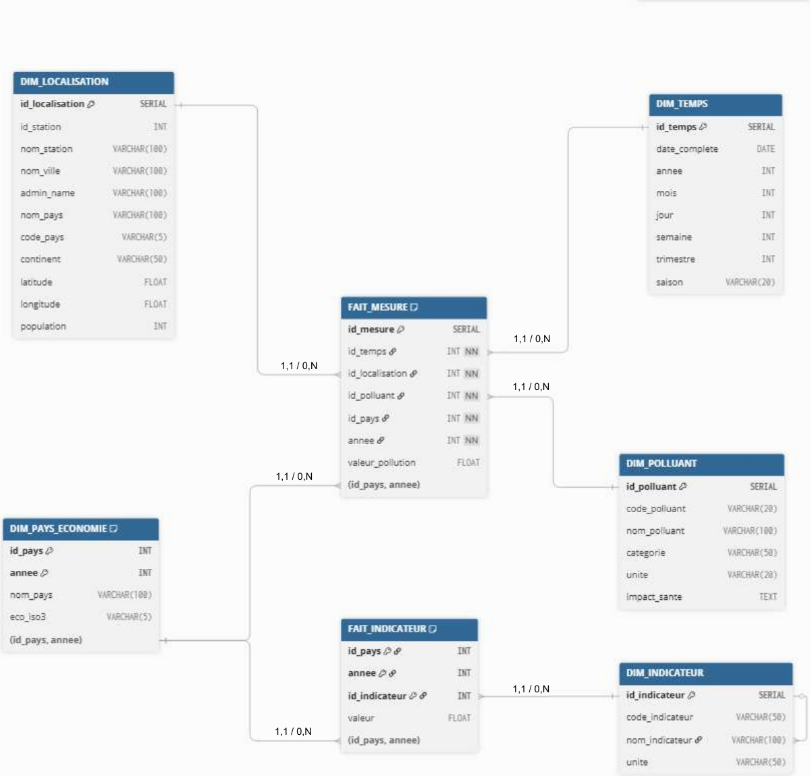
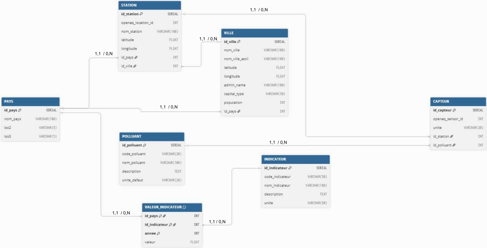
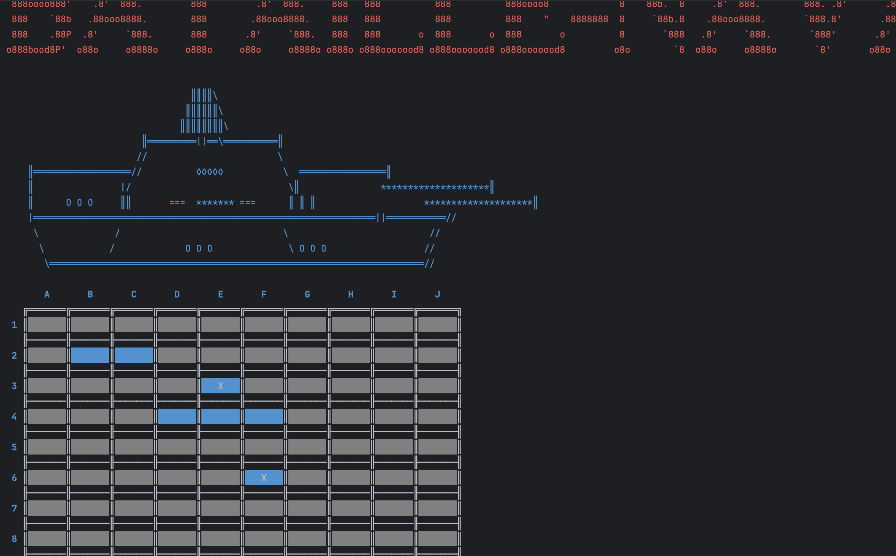
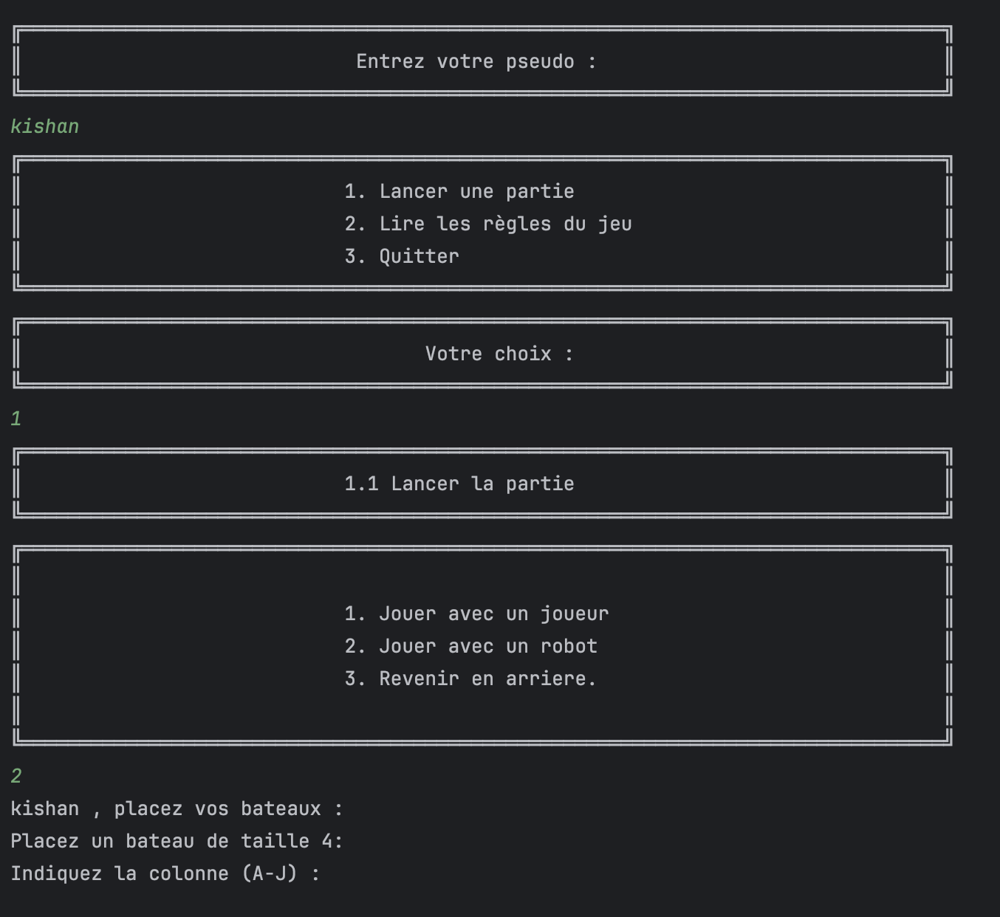
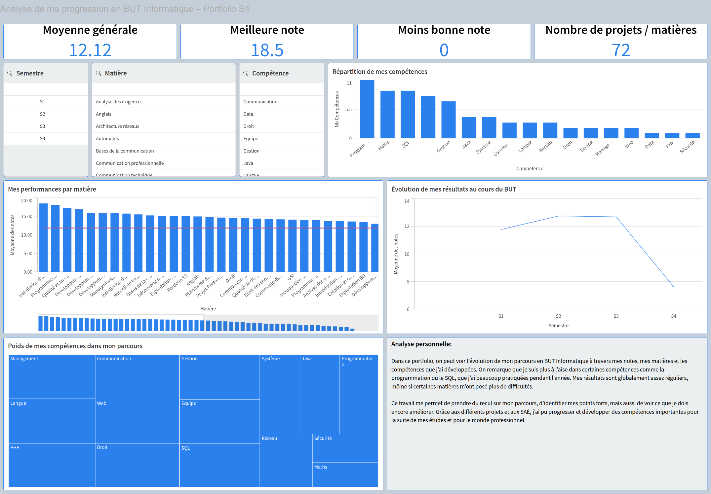

Étudiant en BUT Informatique, spécialisation données
3ᵉ année · IUT de Montreuil, Université Paris 8 · Drancy (93)
Je suis étudiant en 3ᵉ année de BUT Informatique, parcours Administration, Gestion et Exploitation des Données. Cette page rassemble mes projets avec, pour chacun, le code source ou les documents qui permettent de vérifier ce que j'ai réellement fait — plutôt qu'une liste de compétences à prendre pour argent comptant.
Qui je suis
Étudiant en BUT Informatique, je me spécialise en administration, gestion et exploitation des données — modélisation, bases relationnelles, qualité et organisation de l'information.
Bénévole dans l'association socio-spirituelle BAPS, je suis aussi débutant en vidéaste et photographe — mon portfolio photo est présenté plus bas sur cette page.
Je suis actuellement à la recherche d'une opportunité d'alternance ou de stage pour ma 3ᵉ année de BUT.
Ce que je sais faire, et où le vérifier
Les langages et outils que j'utilise, et plus bas, où vérifier certaines compétences en pratique.
Langages
- Python
- Java
- JavaScript
- PHP
- C
- SQL
- HTML
Bases de données
- PostgreSQL
- MongoDB
- MySQL
Outils & environnements
- Git
- Linux
- macOS
- Windows
- VSCode
- IntelliJ
- PyCharm
Frameworks
- JavaFX
- Flask
- JUnit
| Compétence | Preuve |
|---|---|
| Modélisation de données — schéma relationnel et modèle en étoile / constellation | Data Warehouse — Qualité de l'air |
| Écriture et optimisation de requêtes SQL (ROLLUP, CUBE, EXPLAIN ANALYZE) | Data Warehouse — Qualité de l'air |
| Architecture PHP MVC, gestion de sessions, protection CSRF | Buvette Associative |
| Programmation orientée objet en Java, interfaces JavaFX | Zelda |
| Algorithmique de jeu (stratégie, tour par tour) | Puissance 4, Bataille Navale |
| Visualisation et analyse de données avec Qlik Sense | Dashboard de résultats |
Projets académiques & personnels
Du plus récent au plus ancien. Les projets de groupe sont indiqués comme tels.
Data Warehouse — Qualité de l'air
2025 – 2026 · SAÉ S4.C.01Construction d'un entrepôt de données à partir de trois sources publiques (OpenAQ, World Cities, World Bank) : modélisation d'un schéma relationnel normalisé puis d'un modèle en constellation (tables de faits FAIT_MESURE / FAIT_INDICATEUR et 5 dimensions), suivie d'une comparaison de performance entre les deux modèles sur des requêtes OLAP (ROLLUP, CUBE) mesurée avec EXPLAIN ANALYZE. Visualisation finale sous Qlik Sense.


Rapport complet, scripts SQL et fichier Qlik sur GitHub
Buvette Associative
2024 – 2025Plateforme de gestion pour une buvette associative : 4 rôles utilisateurs, base de données sur 19 tables, gestion des stocks et des commandes, authentification et protection CSRF. Architecture PHP en MVC.
Code complet sur GitHub
Puissance 4
2023 – 2024Implémentation de Puissance 4 en Java avec un adversaire piloté par un algorithme de recherche, et un travail d'optimisation sur le temps de calcul des coups.
Zelda
2023 – 2024Jeu d'aventure 2D inspiré de Zelda, développé en JavaFX : exploration de donjon, combats et collecte d'objets.
Bataille Navale
2023 – 2024Jeu de bataille navale en Java, jouable dans le terminal : placement des bateaux, déroulement au tour par tour, gestion des tirs et détection de victoire.


Code complet sur GitHub
Vidéaste et photographe débutant
En dehors de l'informatique, je pratique la photo et la vidéo. Une galerie séparée rassemble ce travail.
Portraits, événements et captations vidéo — la galerie complète est hébergée séparément.
Voir la galerie →Mes notes, analysées avec Qlik Sense
Un dashboard que j'ai construit moi-même à partir de mes résultats sur les 4 semestres du BUT — matières, compétences visées, évolution des moyennes.

« On remarque que je suis plus à l'aise dans certaines compétences comme la programmation ou le SQL, que j'ai beaucoup pratiquées pendant l'année. Mes résultats sont globalement assez réguliers, même si certaines matières m'ont posé plus de difficultés. » — extrait de mon analyse personnelle, dashboard Qlik Sense, sept. 2026
Formation & expérience
BUT Informatique, 3ᵉ année
Baccalauréat Technologique
Stagiaire — Customer Experience
Associé — Société Civile Immobilière
Collaborateur familial
Réceptionniste
Me contacter
À la recherche d'une alternance informatique pour 2026 / 2027 — data, backend ou développement applicatif.